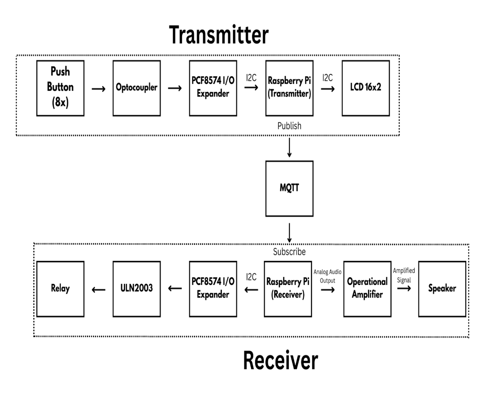
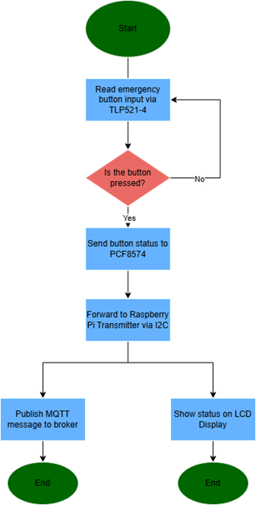
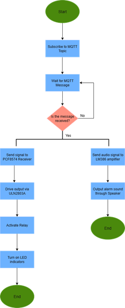

Back to Projects
Embedded Systems & IoT
Raspberry Pi Based Multi-Floor Fire Alarm System Using Python and MQTT
Real-Time IoT Fire Monitoring and Notification System
Real-Time IoT Fire Monitoring and Notification System
This project was developed during an internship at PT Galva Technologies as part of the Research and Development (R&D) division.
The system was designed to create a real-time multi-floor fire alarm monitoring system using Raspberry Pi and the MQTT communication protocol. The project focused on developing embedded software capable of handling emergency button detection, real-time data transmission, relay activation, LED indicators, and audio notifications across multiple building floors.
The architecture consists of two main systems:
Both systems communicate using the MQTT publish-subscribe architecture to ensure fast and lightweight real-time communication. The system was meticulously designed to support multi-floor emergency monitoring, scalable IoT communication, real-time notification systems, distributed alarm architecture, and seamless hardware-software integration.
The complete workflow of the multi-floor fire alarm system is structured as follows:
Push buttons represent emergency/fire triggers for each floor.
TLP521-4 optocoupler provides electrical isolation.
PCF8574 acts as I/O expander using I2C communication.
Raspberry Pi Transmitter processes button status.
MQTT protocol transmits data to Receiver.
Raspberry Pi Receiver receives MQTT messages.
ULN2003 activates relays and indicators.
LM741 amplifier drives audio announcement system.
LCD I2C displays real-time status information.

THIS IS THE MAIN FOCUS OF THE PROJECT. The system leverages the MQTT publish-subscribe architecture, which is a lightweight communication protocol perfectly suited for real-time message delivery, broker-based communication, and highly scalable IoT environments.
The Raspberry Pi Transmitter acts as the publisher, continuously monitoring and sending emergency status data.
The HiveMQ public broker (broker.hivemq.com) manages the rapid message distribution between all nodes.
The Raspberry Pi Receiver subscribes to the broker and receives emergency notification data in real-time.
The MQTT protocol was selected because it provides extremely low bandwidth usage, lightweight communication overhead, ultra-fast message transmission, real-time responsiveness, and highly scalable IoT implementation capabilities.
"The system used broker.hivemq.com as the MQTT broker with real-time publish-subscribe communication between transmitter and receiver devices."
The transmitter is responsible for reading the emergency push button status, monitoring PCF8574 input states, detecting button state changes, displaying status on LCD I2C, publishing MQTT messages, and sending real-time emergency notifications.

Technical Implementation: The Raspberry Pi transmitter continuously monitors button states using a Python-based infinite loop system. Data from the PCF8574 is captured via I2C communication, where button debounce handling and XOR bit-change detection ensure accurate reading. The state is then converted into an 8-bit binary format (binary payload generation) and transmitted through the MQTT publishing process whenever state changes are detected.
The receiver's responsibilities include subscribing to designated MQTT topics, receiving real-time emergency data, activating relays and LED indicators, playing specific audio announcements, managing output devices, and handling multi-floor notifications appropriately.

Technical Implementation: The receiver manages the continuous MQTT subscription process. When incoming MQTT payloads are received, it performs binary data parsing and bit manipulation to identify the triggered floor. It then triggers the relay activation logic and the audio triggering system, automatically activating emergency indicators and audio announcements based strictly on floor-specific events.
The main embedded controller providing the Python execution environment. Handles all MQTT communication and I2C communication management.
An I/O expander utilizing I2C to provide GPIO expansion, crucial for reading multi-button inputs and controlling multiple output devices efficiently.
A relay driver IC designed for high-current switching, safely interfacing the low-power GPIO signals from the Pi with the higher voltage relays.
Provides critical electrical isolation, signal protection, and acts as an optocoupler safety mechanism to protect the core processing boards.
Responsible for audio amplification and speaker signal amplification, driving the emergency audio announcement system loud enough for the facility.
The entire software architecture was developed in Python.
The main features involve a sophisticated Python MQTT client working alongside an infinite loop monitoring system. It leverages state comparison logic (bitwise operations) to detect changes, robust exception handling to maintain uptime, and modular embedded programming practices.
The software specifically handled:
The system testing process was highly rigorous to ensure life-safety reliability. Testing included:
"The system successfully demonstrated stable real-time MQTT communication and reliable emergency notification functionality."
Challenge: Maintaining stable MQTT communication between transmitter and receiver over time.
Solution: Implemented continuous MQTT loop handling and highly stable broker connection management.
Challenge: Synchronizing PCF8574 input states with Raspberry Pi processing latency.
Solution: Used advanced bitwise state comparison and highly efficient polling logic.
Challenge: Preventing overlapping audio announcements during multiple simultaneous triggers.
Solution: Implemented controlled event prioritization and synchronous audio playback handling queues.
Challenge: Limited Raspberry Pi GPIO pins for a multi-floor system.
Solution: Integrated the PCF8574 I/O expander completely through I2C communication multiplexing.